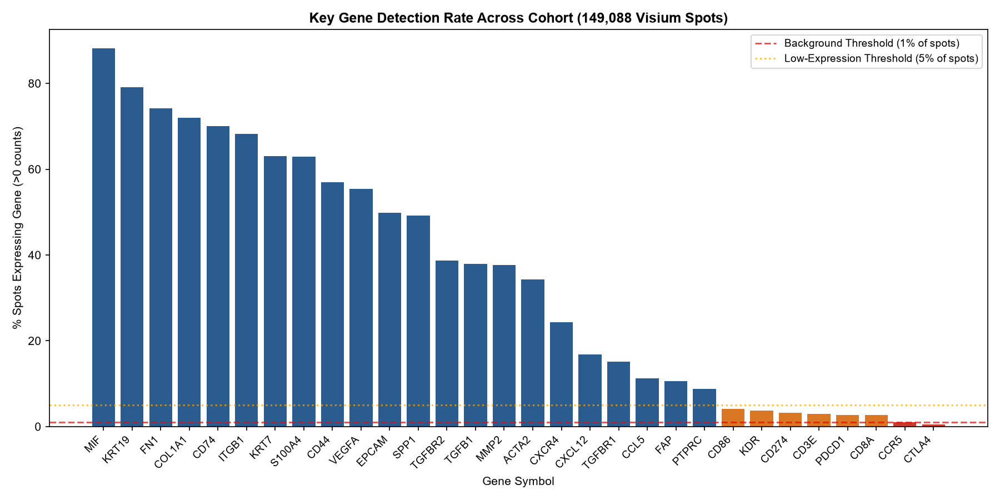
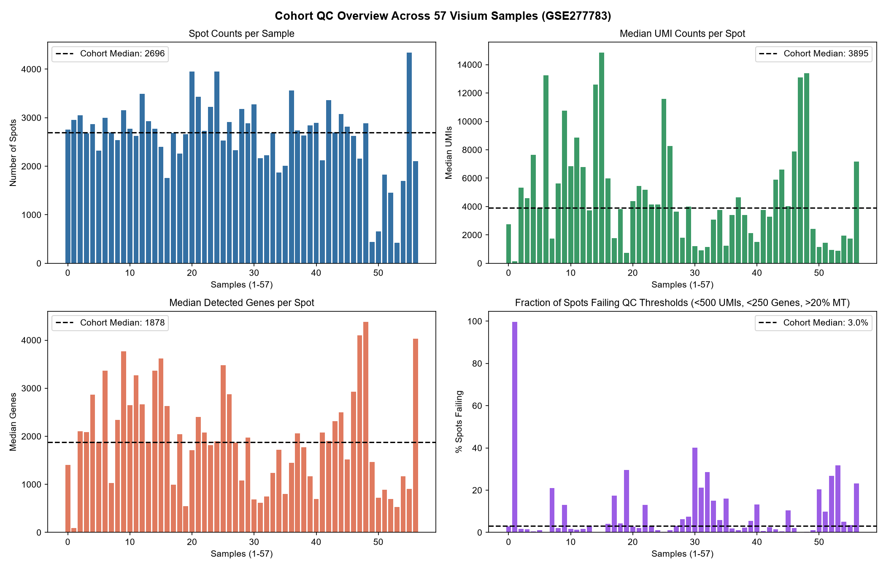
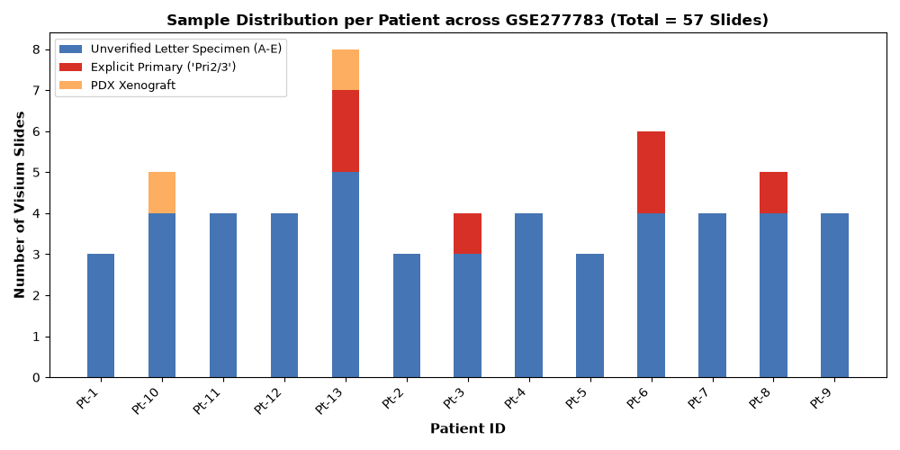

GEO Series GSE277783
Pancreatic Cancer Visium Spatial Cohort
Exploratory Data Analysis (EDA) of GEO SuperSeries GSE277783 ("Spatial mapping of transcriptomic and lineage plasticity in metastatic pancreatic cancer").
The raw download (GSE277783_RAW.tar, 6.28 GB) contains 57 10x Genomics Visium slides profiling 149,088 spatial spots across 13 human patients and 2 PDX models.
All 57 H5 matrices, spatial coordinate trees, and whole-slide histology images were inspected with zero data imputation.
Interactive Slide & Image Visualizer
Explore spatial spot UMI depth maps, histology slide thumbnails, and spot QC violin distributions for all 57 Visium slides.
Key-Gene Detection & Technical Background Floor
Evaluation of the 30 candidate ligand, receptor, and lineage markers across 149,088 spots. Visium whole-transcriptome sequencing lacks negative-control probes; background expression is assessed by spot-level detection rate.

| Gene | % Spots Expressing | Total UMIs | Mean / Spot | Status Category |
|---|
CCR5 (0.98% spots) and CTLA4 (0.53% spots) express <1,600 total reads across all 149k spots and reside at the technical detection floor. Ductal (KRT19, MIF) and desmoplastic stroma (COL1A1, FN1) markers are robustly and ubiquitously detected.
Cohort-Wide Quality Control Overview
Spot counts, median UMI depth, detected genes, and QC fail rates across all 57 Visium slides.

All 57 Visium Samples QC Matrix
| GSM | Sample Label | Patient | Specimen Type | Spots | Median UMI | Median Genes | Median MT% | QC Fail % | QC Flag |
|---|
Cohort Architecture & Methodological Confounds
Critical clinical, technical, and analytical confounders identified in GSE277783 that must be accounted for in downstream hypothesis testing.

Pt-1, Pt-2, Pt-5) to 8 (Pt-13). Pt-13 contributes 14% of all spatial spots in the cohort.